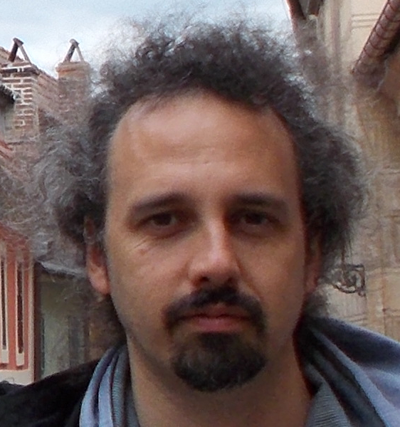

| Name: | Pietro |
| Surname: | Mandracci |
| Position: | Associate Professor |
| Institution: | Politecnico di Torino / Department of Applied Science and Technology (DISAT) |
| Address: | c.so Duca degli Abruzzi 24, I-10129 Torino, Italy |
| Telephone: | +39 011 090 7383 |
| Fax: | +39 011 090 7399 |
| Email: | ti.otilop@iccardnam.orteip |
Last update: May 2026